| Historia |
|---|
|
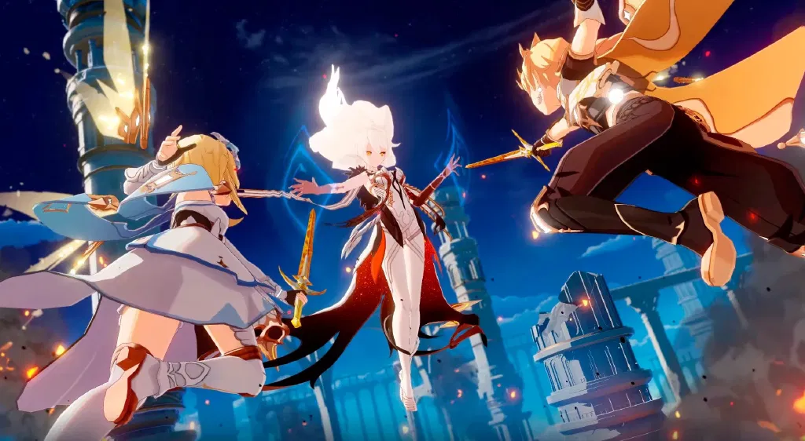 Después de que su tierra natal fuera destruida, el Viajero y su hermano/a recorrieron juntos el vasto mar de estrellas. Fueron testigos del nacimiento y la muerte de incontables astros, hasta que finalmente llegaron a Teyvat. El hermano/a del Viajero viajó solo/a durante un tiempo tras despertar, y cuando la calamidad cayó sobre el mundo, despertó al Viajero con la intención de marcharse juntos de allí. Sin embargo, una deidad desconocida les bloqueó el camino, separando a los dos. Quinientos años después, el Viajero despierta en las afueras de Mondstadt, la ciudad del viento y la libertad, y rescata del río a una pequeña criatura voladora que se presenta como Paimon. Paimon cree que el hermano/a del Viajero pudo haber sido llevado por uno de los Siete Arcontes de Teyvat, y se ofrece a ser su guía para ayudarle a encontrarlo/a. El primer destino de ambos es Mondstadt, la ciudad protegida por el Arconte Anemo, Barbatos. |
1. Encuentro con Dvalin y el cristal rojo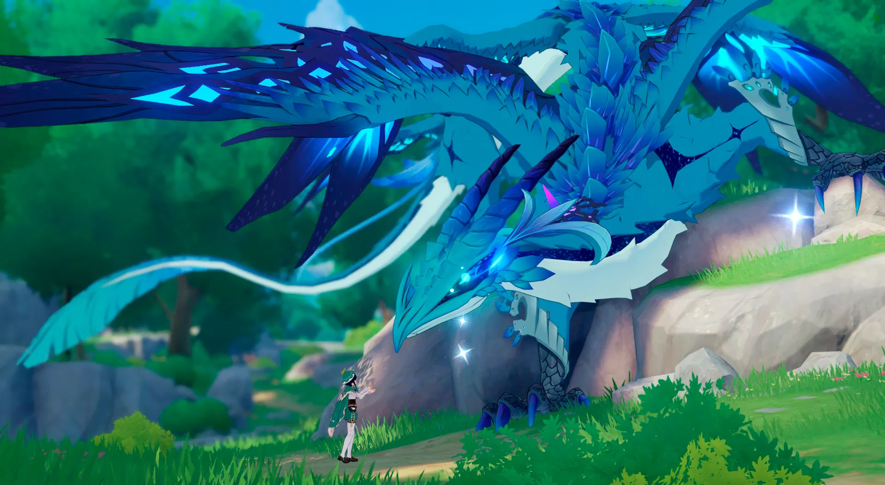 De camino a Mondstadt, el Viajero y Paimon presencian una escena inusual: un joven misterioso (Venti) habla con un enorme dragón azul. El dragón, Dvalin, parece reconocer al Viajero y reacciona con angustia, huyendo rápidamente. En su retirada, deja caer un cristal rojo contaminado, que vibra con energía oscura. Este objeto será clave para entender la corrupción que sufre el dragón. |
2. Conocer a Amber y entrar a Mondstadt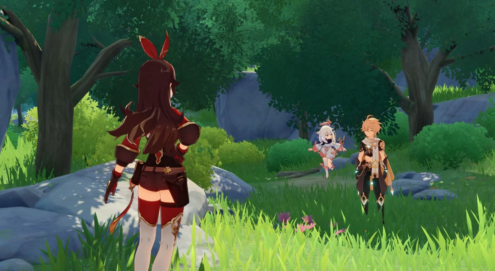 Amber, la única outrider de los Caballeros de Favonius, intercepta al Viajero. Sospecha de él al principio, pero pronto se gana su confianza. Ella lo guía hacia la ciudad mientras investigan un campamento de hilichurls alterados por la presencia de Stormterror. Este encuentro marca el inicio de la relación del Viajero con los Caballeros. |
3. Ataque de Stormterror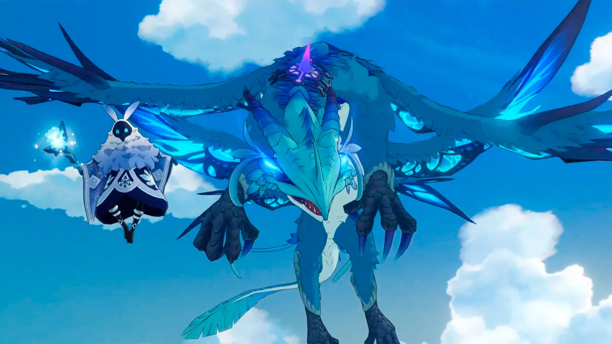 Apenas llegan a la plaza principal, Stormterror ataca Mondstadt. El Viajero, usando un planeador prestado, se eleva para enfrentarlo. Durante el combate, una energía Anemo fluye espontáneamente a través de él, sorprendiendo a todos. Este evento revela que el Viajero puede resonar con los elementos de Teyvat. |
4.Reunión con Jean, Kaeya y Lisa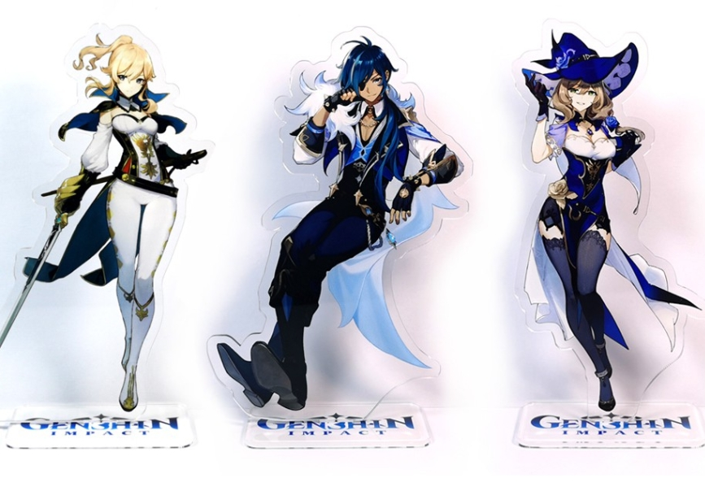 En la sede de los Caballeros de Favonius, Jean (la Gran Maestra Interina), Kaeya y Lisa explican la situación: Stormterror, antes protector de Mondstadt, ahora ataca sin control. El Viajero se ofrece a ayudar y es enviado a purificar los Templos de los Cuatro Vientos, donde se concentra la energía corrupta que alimenta al dragón. |
5. Restauración de los templos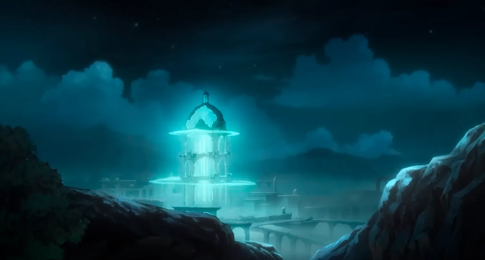 Con la ayuda de Amber, Kaeya y Lisa, el Viajero purifica los templos del Halcón, el Lobo y el León, debilitando a Stormterror. |
6. Aparición de Venti y la verdad sobre Dvalin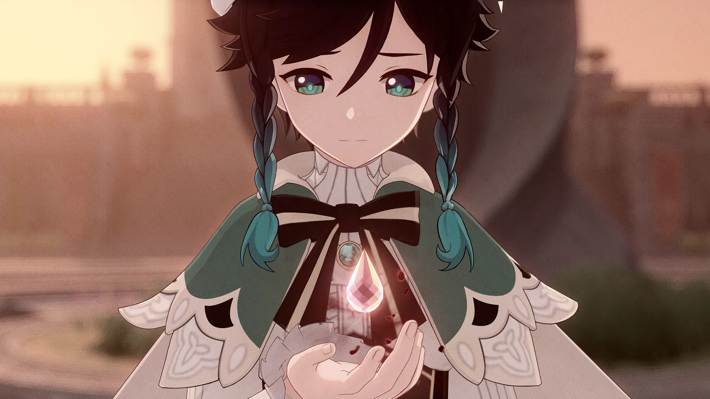 En la plaza, el Viajero conoce a Venti, un bardo alegre y misterioso. Él revela que el cristal rojo es una lágrima de Dvalin, corrompida por un veneno antiguo. Cuenta que Dvalin fue herido en una batalla contra Durin, un dragón caído del cielo. La corrupción nunca sanó del todo, y un Mago del Abismo aprovechó esa herida para manipularlo. |
7. Robo de la Lira Sagrada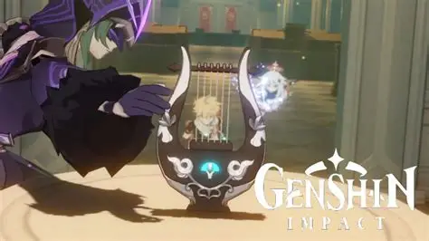 Venti planea usar la Lira Sagrada de Der Himmel para calmar a Dvalin. La Iglesia se niega a prestarla, así que Venti y el Viajero intentan robarla. Sin embargo, los Fatui se adelantan y la roban primero. Con la ayuda de Diluc, logran recuperarla, aunque dañada. |
8.Purificación de las lágrimas y restauración de la Lira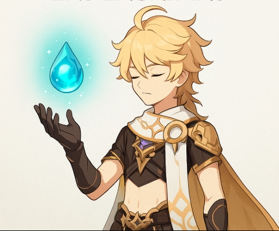 El Viajero purifica varias lágrimas de Dvalin encontradas por Mondstadt. Cada lágrima purificada reduce la corrupción del dragón. Finalmente, la Lira Sagrada es reparada gracias a la energía purificada. |
9. Batalla en Starsnatch Cliff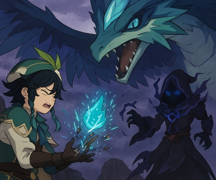 Venti toca la Lira para llamar a Dvalin. El dragón acude, pero el Mago del Abismo aparece y destruye el instrumento. Dvalin, confundido y herido, cree que los humanos quieren matarlo y huye hacia su guarida. Este es el punto más crítico del arco. |
10. Asalto a la Guarida de Stormterror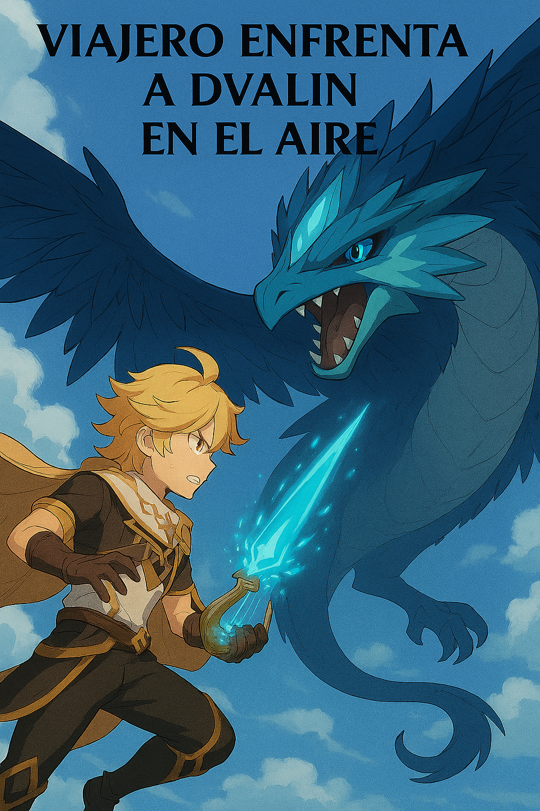 El Viajero, Jean y Diluc se infiltran en la antigua capital de Mondstadt, ahora territorio de Dvalin. Tras desactivar barreras mágicas, el Viajero se eleva al cielo para enfrentarlo directamente. Durante la batalla aérea, destruye los restos de corrupción incrustados en el dragón. Dvalin, liberado, salva al grupo cuando la plataforma colapsa. |
11. Robo de la Gnosis Anemo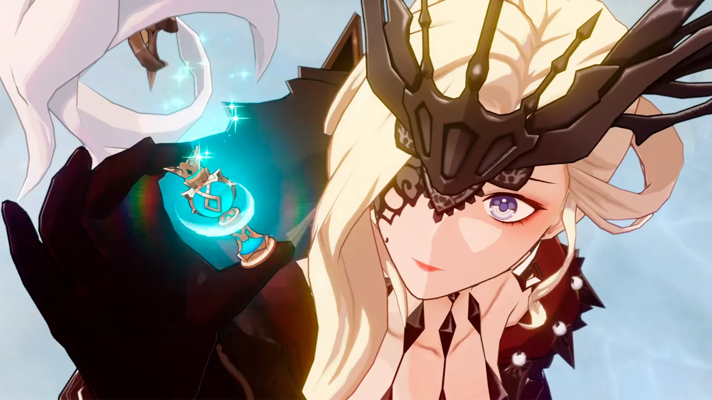 De regreso en Mondstadt, Venti es interceptado por La Signora, la Octava de los Once Heraldos de los Fatui. Ella lo ataca sin piedad y le arrebata la Gnosis Anemo, debilitándolo gravemente. Este evento revela la amenaza real que representan los Fatui. |
12. Fin del arco de Mondstadt.png)
Venti se recupera bajo el gran roble de Windrise. Allí explica que la Gnosis no es necesaria para que él siga siendo Barbatos. Aconseja al Viajero viajar a Liyue, donde otro Arconte podría tener pistas sobre su hermano/a. |
.png)
.png)